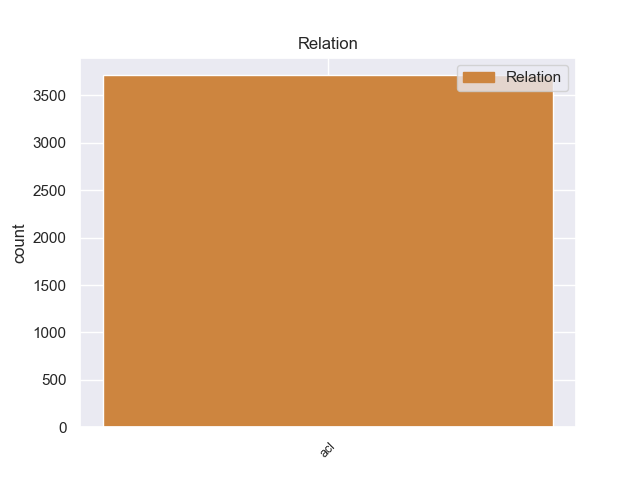
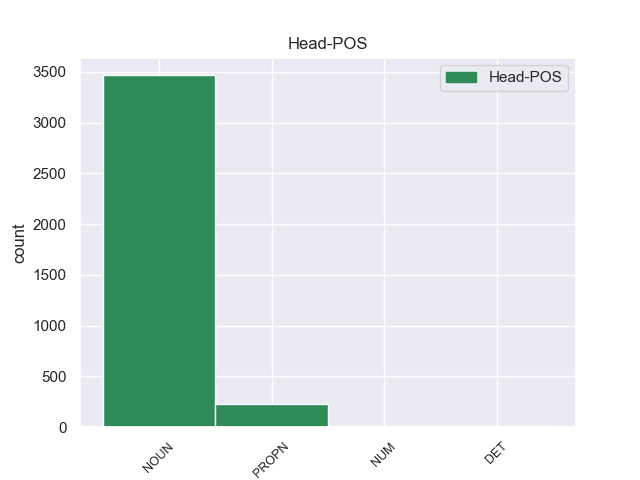
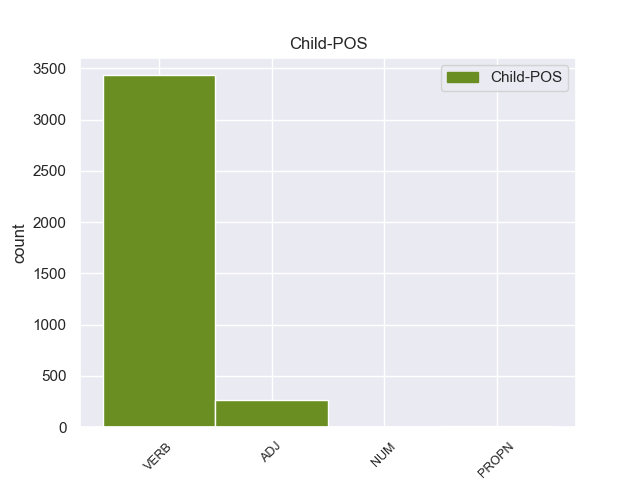

Distribution of features within this leaf



Agreement Rules sorted by frequency.
- When the dependent token is the adjectival clause(acl) of the head token, and the head token is NOUN and the dependent token is VERB.
1 Он _ _ _ _ 0 _ _ _
2 осторожно _ _ _ _ 0 _ _ _
3 , _ _ _ _ 0 _ _ _
4 за _ _ _ _ 0 _ _ _
5 дужку _ _ _ _ 0 _ _ _
6 , _ _ _ _ 0 _ _ _
7 снял _ _ _ _ 0 _ _ _
8 очки _ _ _ _ 0 _ _ _
9 , _ _ _ _ 0 _ _ _
10 ему _ _ _ _ 0 _ _ _
11 хотелось _ _ _ _ 0 _ _ _
12 получше _ _ _ _ 0 _ _ _
13 рассмотреть _ _ _ _ 0 _ _ _
14 человека человек NOUN _ Animacy=Anim|Case=Acc|Gender=Masc|Number=Sing 0 _ _ _
15 , _ _ _ _ 0 _ _ _
16 задающего задавать VERB _ Animacy=Anim|Aspect=Imp|Case=Acc|Gender=Masc|Number=Sing|Tense=Pres|VerbForm=Part|Voice=Act 14 acl 14:acl _
17 такие _ _ _ _ 0 _ _ _
18 несуразные _ _ _ _ 0 _ _ _
19 вопросы _ _ _ _ 0 _ _ _
20 , _ _ _ _ 0 _ _ _
21 а _ _ _ _ 0 _ _ _
22 припылившиеся _ _ _ _ 0 _ _ _
23 стекла _ _ _ _ 0 _ _ _
24 только _ _ _ _ 0 _ _ _
25 мешали _ _ _ _ 0 _ _ _
26 . _ _ _ _ 0 _ _ _
1 Радостно _ _ _ _ 0 _ _ _
2 - _ _ _ _ 0 _ _ _
3 тревожное _ _ _ _ 0 _ _ _
4 чувство _ _ _ _ 0 _ _ _
5 владело _ _ _ _ 0 _ _ _
6 мною _ _ _ _ 0 _ _ _
7 : _ _ _ _ 0 _ _ _
8 я _ _ _ _ 0 _ _ _
9 знал _ _ _ _ 0 _ _ _
10 , _ _ _ _ 0 _ _ _
11 что _ _ _ _ 0 _ _ _
12 ушел _ _ _ _ 0 _ _ _
13 не _ _ _ _ 0 _ _ _
14 так _ _ _ _ 0 _ _ _
15 уж _ _ _ _ 0 _ _ _
16 далеко _ _ _ _ 0 _ _ _
17 и _ _ _ _ 0 _ _ _
18 все _ _ _ _ 0 _ _ _
19 же _ _ _ _ 0 _ _ _
20 куда _ _ _ _ 0 _ _ _
21 сильнее _ _ _ _ 0 _ _ _
22 оторвался _ _ _ _ 0 _ _ _
23 от _ _ _ _ 0 _ _ _
24 дома _ _ _ _ 0 _ _ _
25 , _ _ _ _ 0 _ _ _
26 чем _ _ _ _ 0 _ _ _
27 если _ _ _ _ 0 _ _ _
28 бы _ _ _ _ 0 _ _ _
29 забрел _ _ _ _ 0 _ _ _
30 в _ _ _ _ 0 _ _ _
31 последнюю _ _ _ _ 0 _ _ _
32 даль _ _ _ _ 0 _ _ _
33 по _ _ _ _ 0 _ _ _
34 знакомой знакомый ADJ _ Case=Dat|Degree=Pos|Gender=Fem|Number=Sing 37 acl 37:acl SpaceAfter=No
35 , _ _ _ _ 0 _ _ _
36 проторенной _ _ _ _ 0 _ _ _
37 тропке тропка NOUN _ Animacy=Inan|Case=Dat|Gender=Fem|Number=Sing 0 _ _ _
38 . _ _ _ _ 0 _ _ _
1 Не _ _ _ _ 0 _ _ _
2 прекращающаяся _ _ _ _ 0 _ _ _
3 даже _ _ _ _ 0 _ _ _
4 в _ _ _ _ 0 _ _ _
5 дреме _ _ _ _ 0 _ _ _
6 работа _ _ _ _ 0 _ _ _
7 громадных _ _ _ _ 0 _ _ _
8 челюстей _ _ _ _ 0 _ _ _
9 не _ _ _ _ 0 _ _ _
10 рождала _ _ _ _ 0 _ _ _
11 и _ _ _ _ 0 _ _ _
12 малого _ _ _ _ 0 _ _ _
13 звука _ _ _ _ 0 _ _ _
14 , _ _ _ _ 0 _ _ _
15 но _ _ _ _ 0 _ _ _
16 я _ _ _ _ 0 _ _ _
17 видел _ _ _ _ 0 _ _ _
18 не _ _ _ _ 0 _ _ _
19 раз _ _ _ _ 0 _ _ _
20 такое _ _ _ _ 0 _ _ _
21 же _ _ _ _ 0 _ _ _
22 бесшумное _ _ _ _ 0 _ _ _
23 , _ _ _ _ 0 _ _ _
24 недвижное _ _ _ _ 0 _ _ _
25 стадо _ _ _ _ 0 _ _ _
26 на _ _ _ _ 0 _ _ _
27 густо _ _ _ _ 0 _ _ _
28 - _ _ _ _ 0 _ _ _
29 зеленом _ _ _ _ 0 _ _ _
30 , _ _ _ _ 0 _ _ _
31 влажном _ _ _ _ 0 _ _ _
32 берегу _ _ _ _ 0 _ _ _
33 Серебрянки Серебрянка PROPN _ Animacy=Inan|Case=Gen|Gender=Fem|Number=Sing 0 _ _ _
34 , _ _ _ _ 0 _ _ _
35 почти _ _ _ _ 0 _ _ _
36 незримо _ _ _ _ 0 _ _ _
37 существующей существовать VERB _ Aspect=Imp|Case=Gen|Gender=Fem|Number=Sing|Tense=Pres|VerbForm=Part|Voice=Act 33 acl 33:acl _
38 в _ _ _ _ 0 _ _ _
39 зарослях _ _ _ _ 0 _ _ _
40 осоки _ _ _ _ 0 _ _ _
41 , _ _ _ _ 0 _ _ _
42 камыша _ _ _ _ 0 _ _ _
43 и _ _ _ _ 0 _ _ _
44 лозин _ _ _ _ 0 _ _ _
45 , _ _ _ _ 0 _ _ _
46 и _ _ _ _ 0 _ _ _
47 так _ _ _ _ 0 _ _ _
48 же _ _ _ _ 0 _ _ _
49 пугался _ _ _ _ 0 _ _ _
50 зачарованной _ _ _ _ 0 _ _ _
51 тихости _ _ _ _ 0 _ _ _
52 обычно _ _ _ _ 0 _ _ _
53 столь _ _ _ _ 0 _ _ _
54 щедро _ _ _ _ 0 _ _ _
55 озвученных _ _ _ _ 0 _ _ _
56 в _ _ _ _ 0 _ _ _
57 каждом _ _ _ _ 0 _ _ _
58 жизненном _ _ _ _ 0 _ _ _
59 процессе _ _ _ _ 0 _ _ _
60 животных _ _ _ _ 0 _ _ _
61 . _ _ _ _ 0 _ _ _
1 Вакуум _ _ _ _ 0 _ _ _
2 дал _ _ _ _ 0 _ _ _
3 жизнь _ _ _ _ 0 _ _ _
4 и _ _ _ _ 0 _ _ _
5 одному один NUM _ Case=Dat|Gender=Neut 0 _ _ _
6 из _ _ _ _ 0 _ _ _
7 наиболее _ _ _ _ 0 _ _ _
8 перспективных _ _ _ _ 0 _ _ _
9 направлений _ _ _ _ 0 _ _ _
10 в _ _ _ _ 0 _ _ _
11 металлургии _ _ _ _ 0 _ _ _
12 , _ _ _ _ 0 _ _ _
13 позволяющему позволять VERB _ Aspect=Imp|Case=Dat|Gender=Neut|Number=Sing|Tense=Pres|VerbForm=Part|Voice=Act 5 acl 5:acl _
14 получать _ _ _ _ 0 _ _ _
15 сплавы _ _ _ _ 0 _ _ _
16 с _ _ _ _ 0 _ _ _
17 повышенной _ _ _ _ 0 _ _ _
18 прочностью _ _ _ _ 0 _ _ _
19 , _ _ _ _ 0 _ _ _
20 пластичностью _ _ _ _ 0 _ _ _
21 , _ _ _ _ 0 _ _ _
22 коррозионной _ _ _ _ 0 _ _ _
23 устойчивостью _ _ _ _ 0 _ _ _
24 . _ _ _ _ 0 _ _ _
1 Но _ _ _ _ 0 _ _ _
2 зато _ _ _ _ 0 _ _ _
3 сколько _ _ _ _ 0 _ _ _
4 их _ _ _ _ 0 _ _ _
5 было _ _ _ _ 0 _ _ _
6 потом _ _ _ _ 0 _ _ _
7 , _ _ _ _ 0 _ _ _
8 сколько _ _ _ _ 0 _ _ _
9 верст _ _ _ _ 0 _ _ _
10 проделал _ _ _ _ 0 _ _ _
11 я _ _ _ _ 0 _ _ _
12 по _ _ _ _ 0 _ _ _
13 следам _ _ _ _ 0 _ _ _
14 отца _ _ _ _ 0 _ _ _
15 : _ _ _ _ 0 _ _ _
16 далекий _ _ _ _ 0 _ _ _
17 Иркутск _ _ _ _ 0 _ _ _
18 , _ _ _ _ 0 _ _ _
19 душный душный ADJ _ Case=Nom|Degree=Pos|Gender=Masc|Number=Sing 22 acl 22:acl SpaceAfter=No
20 , _ _ _ _ 0 _ _ _
21 пропыленный _ _ _ _ 0 _ _ _
22 Саратов Саратов PROPN _ Animacy=Inan|Case=Nom|Gender=Masc|Number=Sing 0 _ _ _
23 , _ _ _ _ 0 _ _ _
24 первое _ _ _ _ 0 _ _ _
25 чудо _ _ _ _ 0 _ _ _
26 Ленинграда _ _ _ _ 0 _ _ _
27 , _ _ _ _ 0 _ _ _
28 забытый _ _ _ _ 0 _ _ _
29 богом _ _ _ _ 0 _ _ _
30 Егорьевск _ _ _ _ 0 _ _ _
31 , _ _ _ _ 0 _ _ _
32 Кандалакша _ _ _ _ 0 _ _ _
33 среди _ _ _ _ 0 _ _ _
34 поросших _ _ _ _ 0 _ _ _
35 карликовыми _ _ _ _ 0 _ _ _
36 соснами _ _ _ _ 0 _ _ _
37 сопок _ _ _ _ 0 _ _ _
38 и _ _ _ _ 0 _ _ _
39 похожих _ _ _ _ 0 _ _ _
40 на _ _ _ _ 0 _ _ _
41 осколки _ _ _ _ 0 _ _ _
42 зеркала _ _ _ _ 0 _ _ _
43 озер _ _ _ _ 0 _ _ _
44 , _ _ _ _ 0 _ _ _
45 край _ _ _ _ 0 _ _ _
46 , _ _ _ _ 0 _ _ _
47 разлинованный _ _ _ _ 0 _ _ _
48 , _ _ _ _ 0 _ _ _
49 как _ _ _ _ 0 _ _ _
50 ученическая _ _ _ _ 0 _ _ _
51 тетрадь _ _ _ _ 0 _ _ _
52 , _ _ _ _ 0 _ _ _
53 рядами _ _ _ _ 0 _ _ _
54 колючей _ _ _ _ 0 _ _ _
55 проволоки _ _ _ _ 0 _ _ _
56 , _ _ _ _ 0 _ _ _
57 страшная _ _ _ _ 0 _ _ _
58 Рохма _ _ _ _ 0 _ _ _
59 … _ _ _ _ 0 _ _ _
1 Не _ _ _ _ 0 _ _ _
2 похож _ _ _ _ 0 _ _ _
3 был _ _ _ _ 0 _ _ _
4 на _ _ _ _ 0 _ _ _
5 выпившего _ _ _ _ 0 _ _ _
6 - _ _ _ _ 0 _ _ _
7 просто _ _ _ _ 0 _ _ _
8 нелепый _ _ _ _ 0 _ _ _
9 такой _ _ _ _ 0 _ _ _
10 малый малый NOUN _ Animacy=Anim|Case=Nom|Gender=Masc|Number=Sing 0 _ _ _
11 , _ _ _ _ 0 _ _ _
12 как _ _ _ _ 0 _ _ _
13 Ленечка Ленечка PROPN _ Animacy=Anim|Case=Nom|Gender=Masc|Number=Sing 10 acl 10:acl SpaceAfter=No
14 … _ _ _ _ 0 _ _ _
1 Один _ _ _ _ 0 _ _ _
2 он _ _ _ _ 0 _ _ _
3 здесь _ _ _ _ 0 _ _ _
4 был _ _ _ _ 0 _ _ _
5 такой _ _ _ _ 0 _ _ _
6 и _ _ _ _ 0 _ _ _
7 , _ _ _ _ 0 _ _ _
8 когда _ _ _ _ 0 _ _ _
9 поймал _ _ _ _ 0 _ _ _
10 призывный _ _ _ _ 0 _ _ _
11 взгляд _ _ _ _ 0 _ _ _
12 еще _ _ _ _ 0 _ _ _
13 одного _ _ _ _ 0 _ _ _
14 такого такой DET _ Case=Gen|Gender=Masc|Number=Sing 0 _ _ _
15 же _ _ _ _ 0 _ _ _
16 , _ _ _ _ 0 _ _ _
17 выделившего выделить VERB _ Aspect=Perf|Case=Gen|Gender=Masc|Number=Sing|Tense=Past|VerbForm=Part|Voice=Act 14 acl 14:acl _
18 Монахова _ _ _ _ 0 _ _ _
19 из _ _ _ _ 0 _ _ _
20 всей _ _ _ _ 0 _ _ _
21 толпы _ _ _ _ 0 _ _ _
22 как _ _ _ _ 0 _ _ _
23 своего _ _ _ _ 0 _ _ _
24 , _ _ _ _ 0 _ _ _
25 взгляд _ _ _ _ 0 _ _ _
26 , _ _ _ _ 0 _ _ _
27 приглашавший _ _ _ _ 0 _ _ _
28 поделиться _ _ _ _ 0 _ _ _
29 скептической _ _ _ _ 0 _ _ _
30 улыбкой _ _ _ _ 0 _ _ _
31 посвященности _ _ _ _ 0 _ _ _
32 , _ _ _ _ 0 _ _ _
33 то _ _ _ _ 0 _ _ _
34 надо _ _ _ _ 0 _ _ _
35 отдать _ _ _ _ 0 _ _ _
36 Монахову _ _ _ _ 0 _ _ _
37 должное _ _ _ _ 0 _ _ _
38 , _ _ _ _ 0 _ _ _
39 не _ _ _ _ 0 _ _ _
40 стал _ _ _ _ 0 _ _ _
41 ответно _ _ _ _ 0 _ _ _
42 подмигивать _ _ _ _ 0 _ _ _
43 , _ _ _ _ 0 _ _ _
44 а _ _ _ _ 0 _ _ _
45 смутился _ _ _ _ 0 _ _ _
46 , _ _ _ _ 0 _ _ _
47 застиг _ _ _ _ 0 _ _ _
48 себя _ _ _ _ 0 _ _ _
49 , _ _ _ _ 0 _ _ _
50 нелюбезно _ _ _ _ 0 _ _ _
51 увел _ _ _ _ 0 _ _ _
52 взор _ _ _ _ 0 _ _ _
53 - _ _ _ _ 0 _ _ _
54 отделил _ _ _ _ 0 _ _ _
55 себя _ _ _ _ 0 _ _ _
56 и _ _ _ _ 0 _ _ _
57 от _ _ _ _ 0 _ _ _
58 этого _ _ _ _ 0 _ _ _
59 товарища _ _ _ _ 0 _ _ _
60 . _ _ _ _ 0 _ _ _
1 Не _ _ _ _ 0 _ _ _
2 так _ _ _ _ 0 _ _ _
3 далек _ _ _ _ 0 _ _ _
4 тот _ _ _ _ 0 _ _ _
5 день _ _ _ _ 0 _ _ _
6 , _ _ _ _ 0 _ _ _
7 когда _ _ _ _ 0 _ _ _
8 Афганистан Афганистан PROPN _ Animacy=Inan|Case=Nom|Gender=Masc|Number=Sing 0 _ _ _
9 , _ _ _ _ 0 _ _ _
10 как _ _ _ _ 0 _ _ _
11 Вьетнам Вьетнам PROPN _ Animacy=Inan|Case=Nom|Gender=Masc|Number=Sing 8 acl 8:acl _
12 и _ _ _ _ 0 _ _ _
13 Сомали _ _ _ _ 0 _ _ _
14 , _ _ _ _ 0 _ _ _
15 станет _ _ _ _ 0 _ _ _
16 кладбищем _ _ _ _ 0 _ _ _
17 для _ _ _ _ 0 _ _ _
18 американцев _ _ _ _ 0 _ _ _
19 , _ _ _ _ 0 _ _ _
20 - _ _ _ _ 0 _ _ _
21 значится _ _ _ _ 0 _ _ _
22 на _ _ _ _ 0 _ _ _
23 плакатах _ _ _ _ 0 _ _ _
24 . _ _ _ _ 0 _ _ _
1 - _ _ _ _ 0 _ _ _
2 Мы _ _ _ _ 0 _ _ _
3 будем _ _ _ _ 0 _ _ _
4 в _ _ _ _ 0 _ _ _
5 Москве _ _ _ _ 0 _ _ _
6 практически _ _ _ _ 0 _ _ _
7 в _ _ _ _ 0 _ _ _
8 то _ _ _ _ 0 _ _ _
9 же _ _ _ _ 0 _ _ _
10 время _ _ _ _ 0 _ _ _
11 он _ _ _ _ 0 _ _ _
12 поискал _ _ _ _ 0 _ _ _
13 глазами _ _ _ _ 0 _ _ _
14 того тот DET _ Case=Acc|Gender=Masc|Number=Sing 0 _ _ _
15 , _ _ _ _ 0 _ _ _
16 черненького черненький ADJ _ Animacy=Anim|Case=Acc|Degree=Pos|Gender=Masc|Number=Sing 14 acl 14:acl SpaceAfter=No
17 , _ _ _ _ 0 _ _ _
18 и _ _ _ _ 0 _ _ _
19 не _ _ _ _ 0 _ _ _
20 нашел _ _ _ _ 0 _ _ _
21 . _ _ _ _ 0 _ _ _
1 А _ _ _ _ 0 _ _ _
2 какой-нибудь _ _ _ _ 0 _ _ _
3 один один NUM _ Case=Nom|Gender=Masc 0 _ _ _
4 - _ _ _ _ 0 _ _ _
5 самый _ _ _ _ 0 _ _ _
6 смелый смелый ADJ _ Case=Nom|Degree=Pos|Gender=Masc|Number=Sing 3 acl 3:acl SpaceAfter=No
7 , _ _ _ _ 0 _ _ _
8 самый _ _ _ _ 0 _ _ _
9 взрослый _ _ _ _ 0 _ _ _
10 - _ _ _ _ 0 _ _ _
11 дотягивался _ _ _ _ 0 _ _ _
12 до _ _ _ _ 0 _ _ _
13 рояля _ _ _ _ 0 _ _ _
14 и _ _ _ _ 0 _ _ _
15 трогал _ _ _ _ 0 _ _ _
16 клавишу _ _ _ _ 0 _ _ _
17 пальцем _ _ _ _ 0 _ _ _
18 . _ _ _ _ 0 _ _ _
1 Сейчас _ _ _ _ 0 _ _ _
2 самой _ _ _ _ 0 _ _ _
3 строгой _ _ _ _ 0 _ _ _
4 алкогольной _ _ _ _ 0 _ _ _
5 инспекцией _ _ _ _ 0 _ _ _
6 считается _ _ _ _ 0 _ _ _
7 та тот DET _ Case=Nom|Gender=Fem|Number=Sing 0 _ _ _
8 , _ _ _ _ 0 _ _ _
9 что _ _ _ _ 0 _ _ _
10 в _ _ _ _ 0 _ _ _
11 Татарии Татария PROPN _ Animacy=Inan|Case=Loc|Gender=Fem|Number=Sing 7 acl 7:acl SpaceAfter=No
12 , _ _ _ _ 0 _ _ _
13 которая _ _ _ _ 0 _ _ _
14 в _ _ _ _ 0 _ _ _
15 прошлом _ _ _ _ 0 _ _ _
16 году _ _ _ _ 0 _ _ _
17 забраковала _ _ _ _ 0 _ _ _
18 300 _ _ _ _ 0 _ _ _
19 тысяч _ _ _ _ 0 _ _ _
20 бутылок _ _ _ _ 0 _ _ _
21 красного _ _ _ _ 0 _ _ _
22 вина _ _ _ _ 0 _ _ _
23 , _ _ _ _ 0 _ _ _
24 из _ _ _ _ 0 _ _ _
25 которых _ _ _ _ 0 _ _ _
26 72 _ _ _ _ 0 _ _ _
27 процента _ _ _ _ 0 _ _ _
28 пришлось _ _ _ _ 0 _ _ _
29 на _ _ _ _ 0 _ _ _
30 долю _ _ _ _ 0 _ _ _
31 российских _ _ _ _ 0 _ _ _
32 производителей _ _ _ _ 0 _ _ _
33 ! _ _ _ _ 0 _ _ _
Disagree Examples:
1 С _ _ _ _ 0 _ _ _
2 того _ _ _ _ 0 _ _ _
3 времени время NOUN _ Animacy=Inan|Case=Gen|Gender=Neut|Number=Sing 0 _ _ _
4 , _ _ _ _ 0 _ _ _
5 как _ _ _ _ 0 _ _ _
6 Ушаков _ _ _ _ 0 _ _ _
7 услышал слышать VERB _ Aspect=Perf|Gender=Masc|Mood=Ind|Number=Sing|Tense=Past|VerbForm=Fin|Voice=Act 3 acl 3:acl _
8 стрельбу _ _ _ _ 0 _ _ _
9 , _ _ _ _ 0 _ _ _
10 он _ _ _ _ 0 _ _ _
11 понял _ _ _ _ 0 _ _ _
12 , _ _ _ _ 0 _ _ _
13 что _ _ _ _ 0 _ _ _
14 самое _ _ _ _ 0 _ _ _
15 страшное _ _ _ _ 0 _ _ _
16 , _ _ _ _ 0 _ _ _
17 чего _ _ _ _ 0 _ _ _
18 он _ _ _ _ 0 _ _ _
19 боялся _ _ _ _ 0 _ _ _
20 , _ _ _ _ 0 _ _ _
21 случилось _ _ _ _ 0 _ _ _
22 : _ _ _ _ 0 _ _ _
23 танки _ _ _ _ 0 _ _ _
24 настигли _ _ _ _ 0 _ _ _
25 дивизион _ _ _ _ 0 _ _ _
26 . _ _ _ _ 0 _ _ _
1 И _ _ _ _ 0 _ _ _
2 сейчас _ _ _ _ 0 _ _ _
3 же _ _ _ _ 0 _ _ _
4 перед _ _ _ _ 0 _ _ _
5 головой _ _ _ _ 0 _ _ _
6 Мостового _ _ _ _ 0 _ _ _
7 , _ _ _ _ 0 _ _ _
8 слившейся _ _ _ _ 0 _ _ _
9 с _ _ _ _ 0 _ _ _
10 ружьем _ _ _ _ 0 _ _ _
11 , _ _ _ _ 0 _ _ _
12 в _ _ _ _ 0 _ _ _
13 тот _ _ _ _ 0 _ _ _
14 самый _ _ _ _ 0 _ _ _
15 момент момент NOUN _ Animacy=Inan|Case=Acc|Gender=Masc|Number=Sing 0 _ _ _
16 , _ _ _ _ 0 _ _ _
17 как _ _ _ _ 0 _ _ _
18 ружье _ _ _ _ 0 _ _ _
19 выстрелило выстрелять VERB _ Aspect=Perf|Gender=Neut|Mood=Ind|Number=Sing|Tense=Past|VerbForm=Fin|Voice=Act 15 acl 15:acl _
20 по _ _ _ _ 0 _ _ _
21 танку _ _ _ _ 0 _ _ _
22 , _ _ _ _ 0 _ _ _
23 взлетел _ _ _ _ 0 _ _ _
24 огонь _ _ _ _ 0 _ _ _
25 . _ _ _ _ 0 _ _ _
1 Горстка _ _ _ _ 0 _ _ _
2 пепла _ _ _ _ 0 _ _ _
3 на _ _ _ _ 0 _ _ _
4 подмостках _ _ _ _ 0 _ _ _
5 , _ _ _ _ 0 _ _ _
6 и _ _ _ _ 0 _ _ _
7 такая _ _ _ _ 0 _ _ _
8 тишина тишина NOUN _ Animacy=Inan|Case=Nom|Gender=Fem|Number=Sing 0 _ _ _
9 в _ _ _ _ 0 _ _ _
10 зале _ _ _ _ 0 _ _ _
11 , _ _ _ _ 0 _ _ _
12 какой _ _ _ _ 0 _ _ _
13 давно _ _ _ _ 0 _ _ _
14 не _ _ _ _ 0 _ _ _
15 приходилось приходиться VERB _ Aspect=Imp|Gender=Neut|Mood=Ind|Number=Sing|Tense=Past|VerbForm=Fin|Voice=Mid 8 acl 8:acl _
16 слышать _ _ _ _ 0 _ _ _
17 . _ _ _ _ 0 _ _ _
1 Но _ _ _ _ 0 _ _ _
2 и _ _ _ _ 0 _ _ _
3 сегодня _ _ _ _ 0 _ _ _
4 , _ _ _ _ 0 _ _ _
5 в _ _ _ _ 0 _ _ _
6 то _ _ _ _ 0 _ _ _
7 время время NOUN _ Animacy=Inan|Case=Acc|Gender=Neut|Number=Sing 0 _ _ _
8 , _ _ _ _ 0 _ _ _
9 когда _ _ _ _ 0 _ _ _
10 она _ _ _ _ 0 _ _ _
11 уже _ _ _ _ 0 _ _ _
12 ехала ехать VERB _ Aspect=Imp|Gender=Fem|Mood=Ind|Number=Sing|Tense=Past|VerbForm=Fin|Voice=Act 7 acl 7:acl _
13 на _ _ _ _ 0 _ _ _
14 попутном _ _ _ _ 0 _ _ _
15 мотоботе _ _ _ _ 0 _ _ _
16 , _ _ _ _ 0 _ _ _
17 мысли _ _ _ _ 0 _ _ _
18 ее _ _ _ _ 0 _ _ _
19 стали _ _ _ _ 0 _ _ _
20 мешаться _ _ _ _ 0 _ _ _
21 , _ _ _ _ 0 _ _ _
22 и _ _ _ _ 0 _ _ _
23 она _ _ _ _ 0 _ _ _
24 уснула _ _ _ _ 0 _ _ _
25 . _ _ _ _ 0 _ _ _
1 Многолетняя _ _ _ _ 0 _ _ _
2 практика _ _ _ _ 0 _ _ _
3 фитотерапевта _ _ _ _ 0 _ _ _
4 привела _ _ _ _ 0 _ _ _
5 меня _ _ _ _ 0 _ _ _
6 к _ _ _ _ 0 _ _ _
7 убеждению _ _ _ _ 0 _ _ _
8 , _ _ _ _ 0 _ _ _
9 что _ _ _ _ 0 _ _ _
10 если _ _ _ _ 0 _ _ _
11 правильно _ _ _ _ 0 _ _ _
12 оценены _ _ _ _ 0 _ _ _
13 имеющиеся _ _ _ _ 0 _ _ _
14 в _ _ _ _ 0 _ _ _
15 организме _ _ _ _ 0 _ _ _
16 отклонения _ _ _ _ 0 _ _ _
17 и _ _ _ _ 0 _ _ _
18 адекватно _ _ _ _ 0 _ _ _
19 подобраны _ _ _ _ 0 _ _ _
20 компоненты _ _ _ _ 0 _ _ _
21 фитокомпозиции _ _ _ _ 0 _ _ _
22 , _ _ _ _ 0 _ _ _
23 то _ _ _ _ 0 _ _ _
24 происходит _ _ _ _ 0 _ _ _
25 коррекция _ _ _ _ 0 _ _ _
26 совокупности _ _ _ _ 0 _ _ _
27 нарушений _ _ _ _ 0 _ _ _
28 и _ _ _ _ 0 _ _ _
29 даже _ _ _ _ 0 _ _ _
30 в _ _ _ _ 0 _ _ _
31 трудных _ _ _ _ 0 _ _ _
32 случаях _ _ _ _ 0 _ _ _
33 возрастает _ _ _ _ 0 _ _ _
34 вероятность вероятность NOUN _ Animacy=Inan|Case=Nom|Gender=Fem|Number=Sing 0 _ _ _
35 , _ _ _ _ 0 _ _ _
36 что _ _ _ _ 0 _ _ _
37 основной _ _ _ _ 0 _ _ _
38 желаемый _ _ _ _ 0 _ _ _
39 эффект _ _ _ _ 0 _ _ _
40 будет _ _ _ _ 0 _ _ _
41 достигнут достичь VERB _ Aspect=Perf|Gender=Masc|Number=Sing|Tense=Past|Variant=Short|VerbForm=Part|Voice=Pass 34 acl 34:acl SpaceAfter=No
42 . _ _ _ _ 0 _ _ _